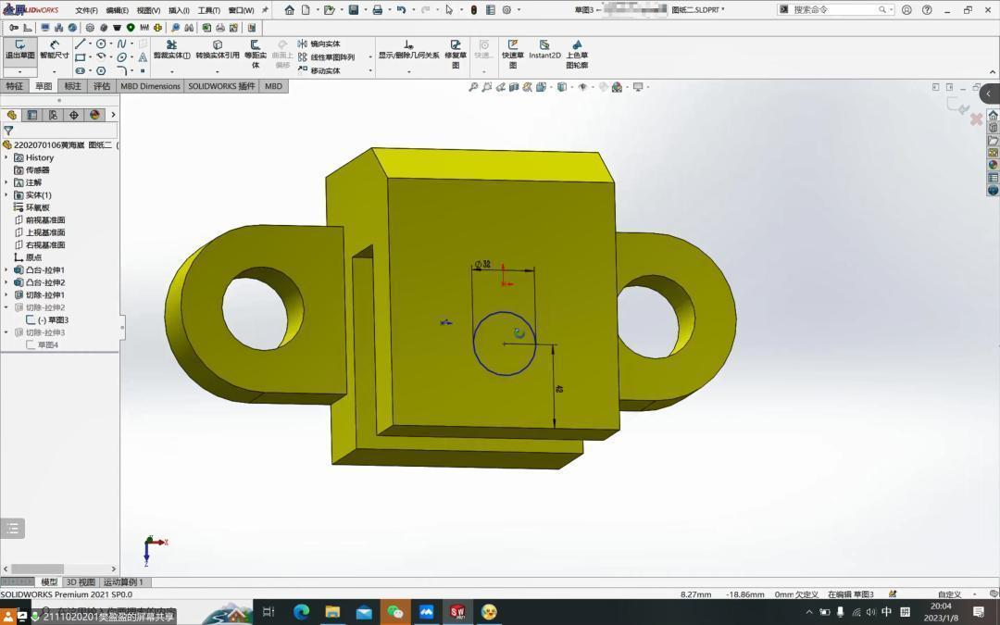
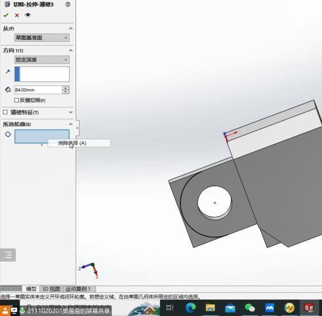
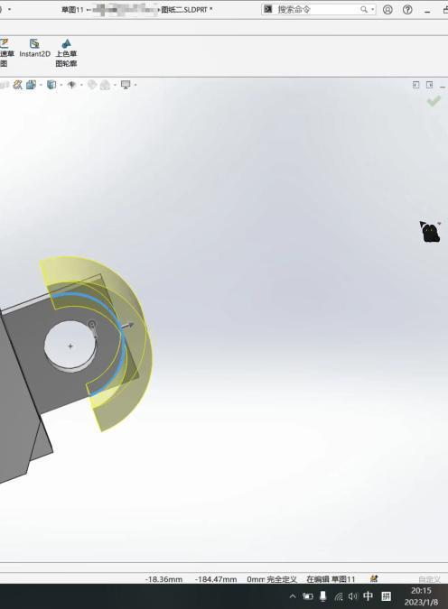
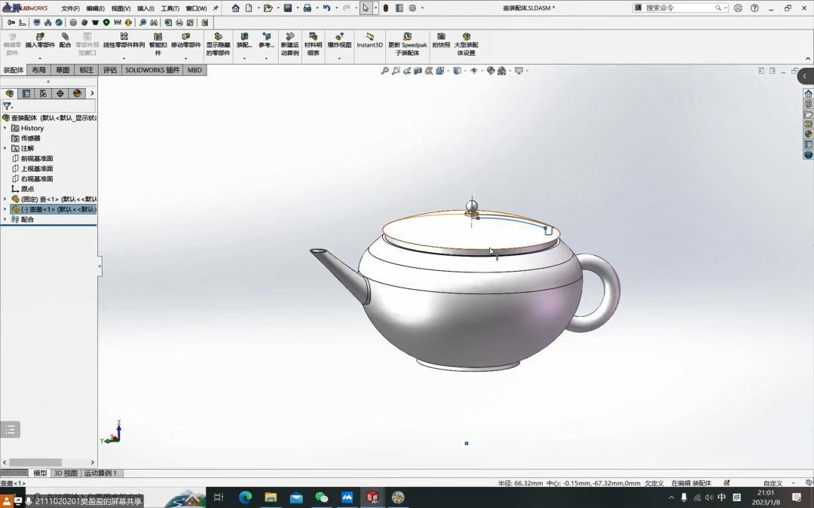
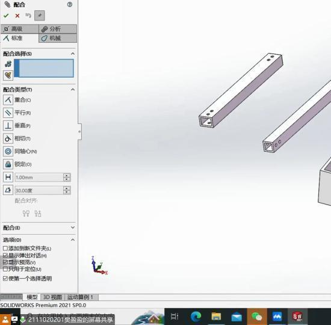
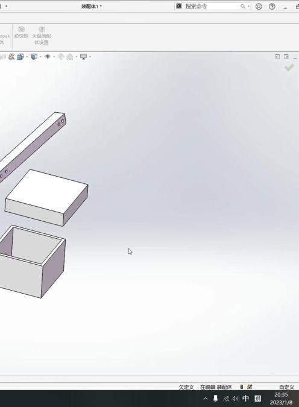
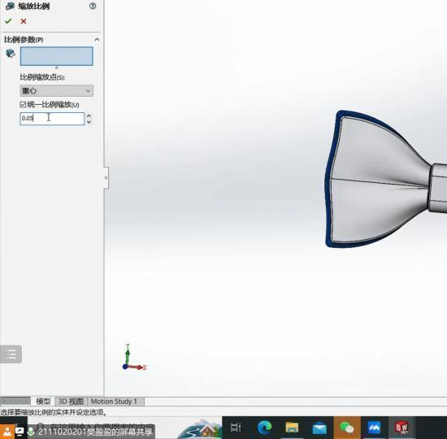
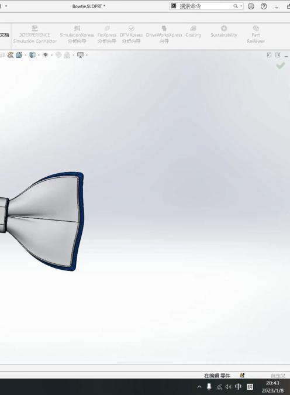

机械组第三次教学


学姐对同学们提交的课后作业进行了检查，针对出现的未完全定义，草图未形成封闭图形等情况进行了纠正。




1：介绍了如何使用Solidworks绘制装配体
2：介绍了Solidworks装配体的标准配合和高级配合的使用方法
3：教授了在如何在装配体中对单个零件进行缩放


1：了解了一些使用Solidworks绘制零件过程中常见的问题
2：学会了在Solidworks中将零件组装装配体并使用配合功能进行固定的方法



自行绘制一个装配体（例如：家具，钟表，文具）
要求：零件需要完全定义，不少于6个零件，自定义材质（必须有），使用3种标准配合，2种高级配合
命名图纸为：姓名+学号
文件夹打包压缩，发送到 66927275@qq.com
排版 | 战空
文案 | 战空
图片 | 沈理电协
审核 | 红鲤